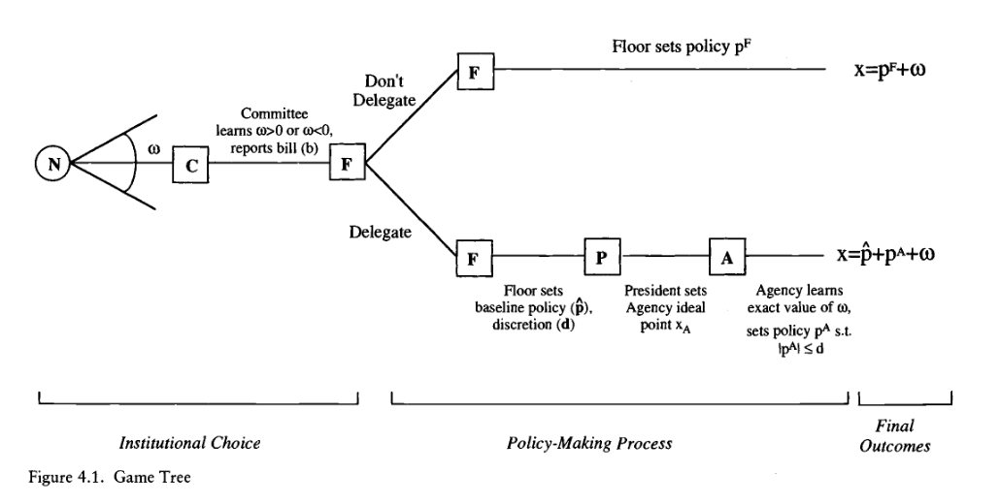

10 Testando as perspectivas
11 Groseclose (1994)
Tests of theories of composition of congressional committees are often problematic. Among the problems are presumed normality of the data, presumed cardinal meaning of the data, and the use of a mean score of committee preference when the corresponding theory only contains implications for the median score. This essay introduces a testing method that avoids these problems. It tests five hypotheses: (1) committees are preference outliers, (2) Democrats stack their slots of committees with liberal outliers, (3) Republicans stack their slots with conservative outliers, (4) committees are representative of the whole House, and (5) Democratic contingents on committees are representative of the whole Democratic caucus. Strong support, however, cannot be found for any of the hypotheses. The preference outliers hypothesis receives the most support, but even here the evidence is mixed. (Groseclose 1994, 440)
In tests of committee composition the most common assumption about data distribution is that preferences of committee and floor members follow a normal distribution. Although often not explicitly stated, the assumption is invoked with tests that involve \(t\), \(F\), or Chi-squared statistics. The assumption is problematic, especially with interest group scores, which are typically bounded by 0 and 100. Although the Central Limit Theory justifies the normality assumption when the test statistic is the mean score of a large committee, the committees tested sometimes have been as small as four members. (Groseclose 1994, 441)
Outlying Committees: “An implication of this line of reasoning (Weingast and Marshall 1988) is that each member of Congress may prefer that members be allowed to self-select onto the committees of their choice rather thatn each committee being representative of the entire chamber. Weingast and Marshall (1988) suggest that this will cause committees to be composed of preference outliers. As a result, the median member of the House Armed Services Committee should be more pro-defense than the median member of the entire House, the median member of an environmental subcommittee should be more pro-environment, and so on.” (Weingast and Marshall 1988, 444)
Representative Committees: “Since the floor is risk averse, its gains are greater when the range that the committee reports for \(w\) is smaller. Since this corresponds to smaller differences in ideal points between the floor and committee, the floor desires committees to be representative of the floor. Given the floor’s drect and indirect ontrols of committee selection, one can interpret this implication as a hypothesis that the difference between the committee median and the floor median to be smaller than it would be if committees were selected randomly.” (Groseclose 1994, 445)
Representative Majority-Party Contingents on Committees: “Cox and McCubbins (1993) offer a third theory that predicts that majority-party contingents of a committee will be representative of the party as a whole. […]. One way to achieve this [maximize electoral prospects of the party as a whole] is by rewarding and punishing members according to their party loyalty. However, a more direct way is to select committee members so that their interests are representative of the party’s. A prediction of the theory is that the median preference of a committee’s majority-party contingent should be nearer to the median preference of the party as a whole that it would be by chance.” (Groseclose 1994, 445)
To test the preference outlier hypothesis, I adopt a Monte Carlo technique in which a computer simulates 20 thousand committees by randomly selecting members from the entire House. From these 20 thousand simulated committees an approximate distribution for the median of a committee is derived, and with this distribution statistical tests can be conduced. (Groseclose 1994, 445–46)
The lack of evidence for the hypothesis that parties stack committees with oposing extremists is consistent with tests conducted by Krehbiel (1990), who examined variances of scores of members of a committee. If parties indeed stack committees with opposing extremists, the variances of scores should be significantly greater than they would be by chance alone. However, of the 21 tests that Krehbiel conducts, only one produced this result. Thus, like Krehbiel’s findings, the results here give little, if any, support to the opposing outlier hypothesis. (Groseclose 1994, 451)
Although the tests conducted here seldom reject the random-selection hypothesis, a plethora of rules and norms for committee selection (such as party and regional balance requirements, seniority norms, limits on the number of committees on which one can serve, etc.) indicate that committee selection is anything but random. Nevertheless, that the random-selection hypothesis is difficult to reject suggests some possibilities for a theory that the data might strongly support.
“One possibility is that each of the hypotheses tested may identify an important influence in committee selection; however some of the influences tend to soften the impact of others, and as a result, cause random-selections nulls not to be rejected.” (Groseclose 1994, 456)
“A second possibility is that committees are purposely chosen to be cross-sections of the chamber rather than outlying or hyperrepresentative. That is, selection neither stacks members toward the chamber median nor toward one of the extremes. Instead, members are selected so that each committee contains its share of fence sitters, fence leaners, and extremists of each side.” (Groseclose 1994, 456)
“Finally, a third possibility is that committee selection has very little to do with preferences and is instead based primarily on other factors such as seniority, regional and party diversity, and expertise. If these factors are only weakly correlated with preferences, tests that adopt preference-based alternative hypotheses, such as those adopted here, would tend not to reject random-selection nulls.” (Groseclose 1994, 456–57)
12 Epstein and O’Halloran (1999), chapters 1 & 4
12.1 Chapter 1: Paths of Policy Making
In the end, then, most of the crucial policy decisions regarding base closings were made by an independent commission, with relatively little room for political interference. It is possible, indeed likely, that in this case the decision-making structure coincided quite closely with one whose sole objective would be the making of good public policy. However, the commission structure was not chosen primarily for its policy benefits; otherwise, Congress would have established such a comission anytime in the previous twelve years. Neither would it have included the provision that all closings pay for themselves within six years, thus exempting those bases that were in the worst shape.
Rather, the commission structure was adopted because it best served legislators’ need to close some bases without handing over too much power to the Defense Department. Congress examined its expected costs and benefits under alternative policy-making structures and selected the one that provided the most possible expected net political benefits, allocating decision-making authority across the branches and constraining it in such a way as to reap the benefits of delegation while minimizing the associated political costs. It is this type of choice over alternative policy-making procedures, and their impact on policy outcomes, that this book will explore. (Epstein and O’Halloran 1999, 4)
We see this inherent tension between effectiveness and responsiveness most clearly in the dramatic changes in the structure of government and the powers and functions of the bureaucracy that have arisen since the New Deal. What divides the modern administrative state from its predecessors is the delegation of broad decision-making authority to a professional civil service. But this delegation authority from Congress to executive has never been monolithic; it has varied over time, by issue area, and with national political and economic trends. (Epstein and O’Halloran 1999, 5)
What is most striking about the figure is the considerable amount of variation across the different issues areas. Predictably, Congress delegates least authority in bills reported out of Ways and Means, Budget, Rules, and the House Administration Committees. But perhaps counter to intuition, bills reported from the Agricultural and Public Works Committees, usually considered “pork-barrel” policy areas that legislators jealously guard, do in fact delegate significant authority to the executive. Finally, the Armed Services Committee delegates the most. (Epstein and O’Halloran 1999, 5)
It is clear from these examples that where policy is made – in Congress or through delegation to the executive – has a significant impact on policy outcomes. The central puzzle to be explained, then, is why does Congress delegate broad authority to the executive in some policy areas but not in other? (Epstein and O’Halloran 1999, 7)
Our approach to this question begins with the observation that policy can be made in Congress, through delegation of authority to executive agences, or by some mixture of these two. Furthermore, the amount of discretionary authority delegated is a decision made by Congress, which can write either detailed legislation that leaves the executive with little latitude in implementation or vague laws that leave executive actors with broad discretionary powers. And when deciding where policy will be made, Congress trades off the internal policy production costs of the committee system against the external costs of delegation. Thus, Congress’s decision to delegate is similar to a firm’s make-or-buy decision; hence, our usage of the term “transaction cost politics”. (Epstein and O’Halloran 1999, 7)
Our theory predicts, then, that policy will be made in the politically most efficient manner, be it through direct legislative action, through delegation to executive branch agencies, or through some combination of these two. Note the term “politically” efficient; we make no claim that the policy making under separate powers will be technically or economically efficient, allocating resources to their greatest advantage. Indeed, as some features of the base-closing case demonstrated, policy making may be quite inefficient according to a strict economic benchmark. Rather, we claim that policy will be made in such a way as to maximize legislators’ political goals, which we take to be reelection first and foremost. Legislators will prefer to make policy themselves as long as the political benefits they derive from doing so outweigh the political costs; otherwise, they will delegate to the executive. (Epstein and O’Halloran 1999, 9)
We also address what has come to be known as the “information versus distribution” debate in the legislative organization literature; that is, whether committees primarily serve members’ distributive, pork barrel needs or their desire to avoid the consequences of ill-informed policy. We assert that this question must be a false dichotomy: Some policy areas are characterized more by informational concers, others by distributive, and still others by both. The right question to ask, from our perspective, is how the informational and distributive content of an issue area affects the types of procedures used to implement policy. Specifically, we shall argue that informationally intense policy areas will be good candidates for delegation, while distributive issues will tend to be made in Congress. (Epstein and O’Halloran 1999, 10)
We also claim that legislative organization is directly affected by its broader environment of separate powers: Congressional committees will be organized differently given the possibility of delegation to the executive. Their preferences will not be extreme, as predicted by a purely distributive approach, nor will they meet the informational theory’s expectations of precisely matching the median floor voter’s preferences. Rather, committees will tend to be moderately biased in a direction opposite to the preferences of the executive branch; they will e contrary outliers. This highlights the differences between a policy-making perspective that begins and ends within Congress, and one that incorporates executive branch decision making into the analysis. (Epstein and O’Halloran 1999, 11)
12.2 Chapter 4: The Decision to Delegate
Given the transaction cost politics approach we outlined in Chapter 3, a formal model of Congress’s decision to delegate must contain the following elements: (1) a focus on legislation as the basic unit of analysis; (2) an enforcement mechanism for interbranch contracts; (3) residual rights of control combined with multiple possible governance structures; (4) bounded rationality, leading to incomplete contracts; (5) the political hold-up problem; (6) internal transaction costs of production; and (7) a decision mechanism predicting which governance structure will be chosen by legislators whose first concern is reelection. The components are all captured in the following model of the policy-making process.
The relevant players in our game consist of the median Floor voter in Congress, a congressional Committee, the President, and an executive branch Agency, identified as F, C, P, and A, respectively. Consistent with our theory of transaction cost politics, our unit of analysis is a bill; therefore, these players will combine to make policy in a one-dimensional policy space \(X = \mathbb{R}^1\). This assumption of unidimensionality is seemingly simple but nonetheless crucial, as the most important division in formal models of political processes is between one-dimensional and multidimensional policy spaces. If policy can be accurately portrayed as falling along a single left-right spectrum, and if political actors have single-peaked preferences, then there exists a median voter who will be pivotal in the choice of legislative organization, administrative procedures, policies, and so on.
Each actor has a most-preferred policy, or ideal point, in this unidimensional space; if the policy in question is agriculture, then this could represent the actor’s preferred level of aid to farmers. If actor \(i\) has ideal point \(X_i\) and the final policy outcome is X, then the actor gains utility equal to \(-(X - X_i)^2\), known as a quadratic loss functon. Without loss of generality, we assume that the floor’s ideal point \(x_f = 0\) and the president’s ideal point \(x_p > 0\).
This quadratic loss function has two important implicatons. First, actors will prefere outcomes that are closer to their ideal point than those further away; this is the distributive component of their utility. But actors will also be risk-averse, meaning that they will dislike uncertainty over policy outcomes; this is the informational component. Even though actors want outcomes close to their preferred policy, then, they may nonetheless be willing at the margin to accept a system that biases policy away from their preferences if they can simoutaneously reduce the uncertainty associated with these outcomes. (Epstein and O’Halloran 1999, 53–54)
The game is played as follows. First, committees gain some information about the policy issue being discussed, and then they send a bill or report to the floor player. Based on this report, the floor player must decide whether to enact specific legislation that gives the executive no substantive input into policy or to allow the executive some latitude. If she chooses to delegate, \(F\) can set both a baseline policy \(\hat{p}\) and give the executive some (possibly limited) discretion to move policy away from \(\hat{p}\). (Epstein and O’Halloran 1999, 55)

Thus far, our setup is similar to previous models of committees and legislative organization under imperfect information. Where we depart from this tradition is by assuming that committees’ expertise in the relevant issue area are incomplete and that they have less information than an agency would have when promulgating regulations. We assume that while the agency observes the exact value of \(\omega\), the committee observes only whether \(\omega\) lies in the range \([-R, 0]\) or the range \([0, R]\); that is, the committee sees only the sign of \(\omega\). This agency advantage might arise through greater numbers of staff and more time to analyze the technical issues at hand, or it might simply be due to the fact that some time will elapse between the passing of the law and making regulations, giving the agency access to new information revealed in that period. (Epstein and O’Halloran 1999, 56–57)
If the floor chooses to delegate to the executive branch (\(\mathcal{D} = 1\)), then it must also determine the procedures under which the agency will operate. In particular, \(F\) sets a status quo policy (\(\hat{p}\)) and specify the level of discretionary authority (\(d\)) that the agency has to move outcomes away from \(\hat{p}\).
Proposition 1: The closer the preferences of the committee to those of the median floor voter, the less likely Congress is to delegate authority to the executive.
Proposition 2: The closer the preferences of the president to those of the median floor voter, the more likely Congress is to delegate authority to the executive. (Epstein and O’Halloran 1999, 75)
Predictions:
- Congressional-Executive Relations: \(X_p\)
Hypothesis 1: Divided Government and Delegation. Less discretionary authority will be delegated to the executive during times of divided government.
Hypothesis 2: Roll-Call Votes and Delegation. Legislators from the president’s party will vote in support of delegation, while legislators from the other party will vote against it.
Hypothesis 3: Agency Type and Delegation. During times of divided government, Congress will delegate more often to independent agencies and non-executive branch actors.
- Legislative Organization: \(X_c\)
Hypothesis 4: Committee Composition. (a) The range of committee medians should narrow during times of unified government. (b) Committee medians will move opposite to changes in the preferences of the executive.
Hypothesis 5: Committee Outliers and Delegation. (a) The more the committee considering legislation is a preference outlier, the more likely Congress is to delegate authority to the executive branch. (b) The magnitude of the committee outliers’ impact on discretion will decline as interbranch conflict increases.
Hypothesis 6: Legislative Parties and Delegation. The more cohesive the majority party in Congressis, the less authority will be delegated to the executive.
Hypothesis 7: Parliamentary Procedures and Delegation. (a) The amount of discretion delegated to the executive will decrease for multiply referred bills. (b) The amount of discretion delegated to the executive will decrease for bills that receive restrictive amendment procedures.
- Issue Areas and Delegation: R
Hypothesis 8: Issues Areas and Delegation. More authority will be delegated to the executive in informationally intense issues areas.
Hypothesis 9: Issue Areas and Committees. Bills reported by committees with informationally intense policy jurisdictions will delegate greater discretionary authority to the executive.
13 McCubbins and Schwartz (1984)
Scholars often remarked that Congress neglects its oversight responsibility. We argue that Congress does no such thing: what appears to be a neglect of oversight really is the rational preference for one form of oversight – which we call fire-alarm oversight – over another form – police-patrol oversight. Our analysis supports a somewhat neglected way of looking at the strategies by which legislators seek to achieve their goals. (McCubbins and Schwartz 1984, 165)
Scholars often complain that Congress has neglected its oversight responsibility: despite a large and growing executive branch, Congress has done little or nothing to oversee administrative compliance with legislative goals. As a consequence, we are told, Congress has largely lost control of the executive branch: it has allowed the executive branch not only to grow but to grow irresponsible. In popular debate as well as congressional scholarship, this neglect of oversight has become a stylized fact: widely and dutifully reported, it is often bemoaned, sometimes explained, but almost never seriously questioned. We question it. What has appeared to scholars to be a neglect of oversight, we argue, really is a preference for one form of oversight over another, less-effective form. In so arguing, we develop a simple model for congressional choice, and draw from it further implications regarding bureaucratic discretion and regulatory legislation. More generally, we model the choice by policy makers of an optimal enforcement strategy, given opportunity costs, available technology, and human cognitive limits. (McCubbins and Schwartz 1984, 165)
POLICY-PATROL OVERSIGHT. Analogous to the use of real police patrols, police-patrol oversight is comparatively centralized, active, and direct: as its own initiative, Congress examines a sample of executive-agency activities, with the aim of detecting and remedying any violations of legislative goals and, by its surveillance, discouraging such violations. An agency’s activities might be surveyed by any of a number of means, such as reading documents, commissioning scientific studies, conducting field observations, and holding hearings to question officials and affected citizens. FIRE-ALARM OVERSIGHT. Analogous to the use of real fire alarms, fire-alarm oversight is less centralized and involves less active and direct intervention than police-patrol oversight: instead of examining a sample of administrative deciions, looking for violations of legislative goals, Congress stablishes a system of rules, procedures, and informal practices that enable individual citizens and organize interest groups to examine administrative decisions (sometimes in prospect), to charge executive agences with violating congressional goals, and to seek remedies from agencies, courts, and Congress itself. Some of these rules, procedures, and practices afford citizens and interest groups access to information and to administrative decision-making processes. Others give them standing to challenge administrative decisions before agencies and courts, or help them bring alleged violations to congressmen’s attention. Still others facilitate collective action by comparatively disorganized interest groups. Congress’s role consists in creating and perfecting the decentralized system and, occasionally, intervening in response to complaints. Instead of sniffing for fires, Congress places fire-alarm boxes on street corners, builds neighborhood fire houses, and sometimes dispaches its own hook-and-ladder in response to an alarm. (McCubbins and Schwartz 1984, 166)
Consequences of the model:
CONSEQUENCE 1: To the extent that they favor oversight activity of any sort, congressmen tend to prefer fire-alarm oversight to police-patrol oversight (McCubbins and Schwartz 1984, 167).
According to the Motivational Assumption (as in Mayhew 2004), then, their time is largely wasted [if the choose the police-patrol oversight], so they incur in opportunity costs. But under a fire-alarm policy, a congressman does not address concrete violations unless potential supporters have complained about them, in which case he can receive credit for intervening. (McCubbins and Schwartz 1984, 168)
Besides, “Under a fire-alarm policy, by contrast, potential supporters can in most cases bring to congressmen’s attention any violations that harm them and for which they have received no adequate remedy through the executive or judicial branch.” (McCubbins and Schwartz 1984, 168)
CONSEQUENCE 2: Congress will not neglect its oversight responsibility. It will adopt an extensive and somewhat effect (even if imperfect) oversight policy. (McCubbins and Schwartz 1984, 168).
This is because one of the two forms of oversight – the fire-alarm variety – serves congressmen’s interest at little cost. When his potential supporters complain of a violation of legislative goals, a congressman gains credit if he eliminates the cause of the complaint. (McCubbins and Schwartz 1984, 168)
CONSEQUENCE 3: Congress will adopt an extensive and somewhat effective policy of fire-alarm oversight while largely neglecting police-patrol oversight. (McCubbins and Schwartz 1984, 169)
Regarding the apparent fact that Congress neglects oversight, we choose alternative (b) over (a): what appears to be a neglect of oversight can be explained as a preference by congressmen for fire-alarm over police-patrol oversight. We have already argued that congressmen have this preference. Scholars who decry the neglect of oversight have, we suggest, focused on a single form of oversight: they have looked only for police-patrol oversight, ignoring the fire-alarm alternative – and therewith the major part of actual oversight activity. (McCubbins and Schwartz 1984, 170)
We will argue that fire-alarm oversight is likely to be more effective, on balance, than police-patrol oversight. But this requires two qualifications: First, we do not contend that the most effective oversight policy is likely to contain no police-patrol oversight, only that fire-alarm techniques are likely to predominate. Second, we do not contend that a predominantly fire-alarm policy is more likely than a predominantly police-patrol policy to serve the public interest, only that it is likely to secure greater compliance with legislative goals; whether such compliance serves the public interest depends on what those goals are. (McCubbins and Schwartz 1984, 171)
To be sure, fire-alarm oversight tends to be particularistic in the sense of Mayhew (2004): it arguably emphasizes the interest of individuals and interest groups more than those of the public at large. This is an important difference – the essential difference, we think, between the respective products of police-patrol and fire-alarm oversight. But whether it is a shortcoming of fire-alarm oversight depends on one’s ideological point of view: even if fire-alarm oversight deemphasizes some public-interest concerns, it gives special emphasis to a concern for the interests and rights of individual citizens and small groups – a concern well founded in American political values. (McCubbins and Schwartz 1984, 172)
Besides criticizing the received wisdom regarding congressional oversight, we hope to have highlighted a neglected way of looking at congressional behavior. Sometimes Congress appears to do little, leaving important policy decisions to the executive and judicial branch. But appearences can deceive. A perfectly reasonable way for Congress to pursue its objectives is by ensuring that fire alarms will be sounded, enabling courts, administrative agencies, and ultimately Congress itself to step in, whenever executive compliance with congressional objectives is called in questions. (McCubbins and Schwartz 1984, 176)